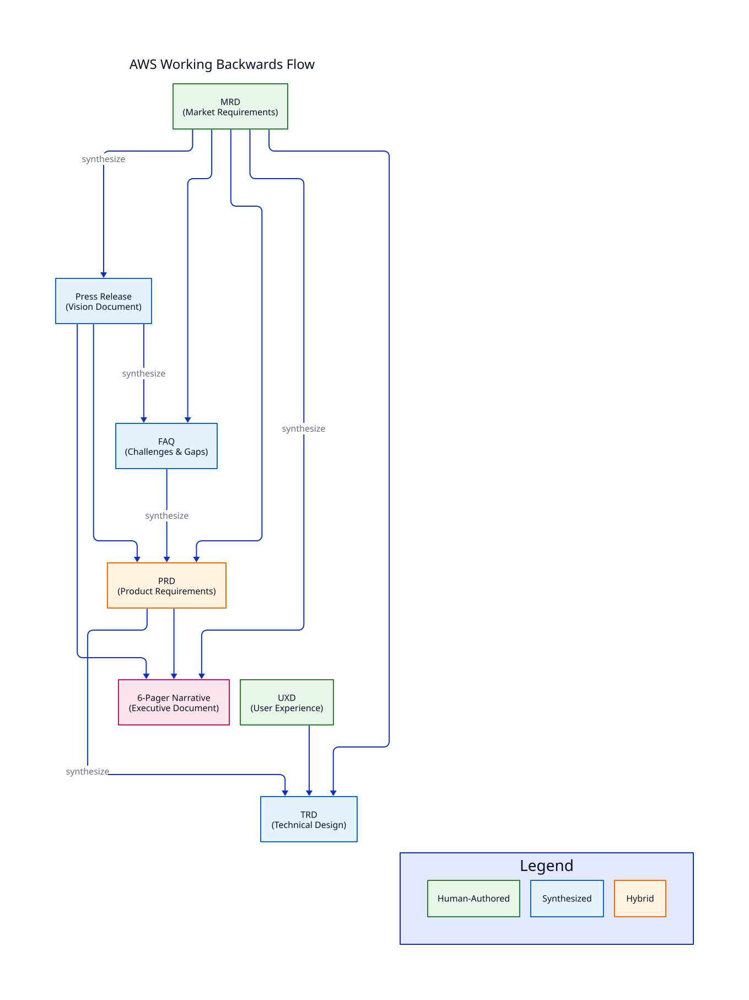

AWS Working Backwards¶
Amazon's Working Backwards methodology starts with the customer and works backward to the solution. It emphasizes writing as thinking, with the PR/FAQ and 6-Pager as core artifacts.
The Flow¶

Key Principles¶
- Customer Obsession: Start with the customer and work backwards
- Write First: Document the vision before building
- PR/FAQ: Write the press release announcing the product's launch
- Challenge Assumptions: Use FAQ to surface gaps and concerns
- Narrative-Driven: Use 6-pagers for decision-making
VisionSpec Mapping¶
| AWS Artifact | VisionSpec Type | Purpose |
|---|---|---|
| Business Case | MRD | Market opportunity and customer problem |
| Press Release | Press | Vision document announcing the solution |
| FAQ | FAQ | Challenges claims, surfaces gaps |
| PRFAQ Combined | PRD | Product requirements derived from narrative |
| 6-Pager | Narrative | Executive decision document |
| Design Doc | TRD | Technical architecture |
Using the AWS Profile¶
Initialize a Project¶
Create the MRD (Business Case)¶
Synthesize Working Backwards Documents¶
# Generate Press Release from MRD
multispec synthesize press -p my-product
# Generate FAQ from MRD + Press
multispec synthesize faq -p my-product
# Generate PRD from Working Backwards artifacts
multispec synthesize prd -p my-product
# Generate 6-Pager Narrative
multispec synthesize narrative-6p -p my-product
Evaluate Documents¶
# Evaluate Press Release against Leadership Principles
multispec eval press -p my-product
# Check readiness
multispec status -p my-product
Templates¶
Press Release Template¶
The Press Release template includes:
- Headline: One sentence capturing customer benefit
- Subheadline: Target customer and key value
- Problem: Customer pain point
- Solution: How the product solves it
- Quote (Spokesperson): Internal vision
- Customer Journey: How to get started
- Quote (Customer): External validation
- Call to Action: Next steps
FAQ Template¶
The FAQ template covers:
- Customer Questions: What customers will ask
- Internal Questions: Stakeholder concerns
- Technical Questions: Implementation challenges
- Business Questions: Market and financial viability
6-Pager Template¶
The 6-Pager template follows Amazon's structure:
- Introduction and context
- Goals and tenets
- State of the business
- Lessons learned
- Strategic priorities
- Appendix with data
Rubric Categories¶
The AWS profile evaluates documents on:
| Category | Weight | Description |
|---|---|---|
| Working Backwards Fidelity | 20% | Starts with customer, not technology |
| Customer Clarity | 20% | Specific customer segment and problem |
| Decision Reversibility | 15% | Two-way vs one-way door decisions |
| Bias for Action | 15% | Speed of execution considered |
| Long-Term Thinking | 15% | Sustainable competitive advantage |
| Frugality | 10% | Resource efficiency |
| Deep Dive | 5% | Data-driven analysis |
Example Workflow¶
# 1. Initialize project
multispec init checkout-redesign --profile aws
# 2. Draft MRD with business case
multispec draft mrd -p checkout-redesign
# ... collaborate on MRD ...
multispec finalize mrd -p checkout-redesign
# 3. Synthesize Press Release
multispec synthesize press -p checkout-redesign
multispec eval press -p checkout-redesign
multispec approve press -p checkout-redesign
# 4. Synthesize FAQ
multispec synthesize faq -p checkout-redesign
multispec eval faq -p checkout-redesign
multispec approve faq -p checkout-redesign
# 5. Synthesize PRD from Working Backwards artifacts
multispec synthesize prd -p checkout-redesign
multispec eval prd -p checkout-redesign
# 6. Human authors UXD
multispec draft uxd -p checkout-redesign
# 7. Synthesize TRD
multispec synthesize trd -p checkout-redesign
# 8. Generate 6-Pager for executive review
multispec synthesize narrative-6p -p checkout-redesign
# 9. Check status
multispec status -p checkout-redesign
Reference Materials¶
For deeper understanding of AWS Working Backwards methodology, see:
- AWS Leadership Principles
- Working Backwards by Colin Bryar and Bill Carr
- Internal reference:
frameworks-internal/aws-leadership-principles/